Reinforcement learning (RL) has become a standard approach for post-training large language models and, more recently, for improving image generation models, which uses reward functions to enhance generation quality and human preference alignment. However, existing reward designs are often imperfect proxies for true human judgment, making models prone to reward hacking–producing unrealistic or low-quality images that nevertheless achieve high reward scores.
In this work, we systematically analyze reward hacking behaviors in text-to-image (T2I) RL post-training. We investigate how both aesthetic/human preference rewards and prompt-image consistency rewards individually contribute to reward hacking and further show that ensembling multiple rewards can only partially mitigate this issue. Across diverse reward models, we identify a common failure mode: the generation of artifact-prone images. To address this, we propose a lightweight and adaptive artifact reward model, trained on a small curated dataset of artifact-free and artifact-containing samples. This model can be integrated into existing RL pipelines as an effective regularizer for commonly used reward models.
Experiments demonstrate that incorporating our artifact reward significantly improves visual realism and reduces reward hacking across multiple T2I RL setups, demonstrating the effectiveness of lightweight reward augment serving as a safeguard against reward hacking.
The use of reinforcement learning (RL) has proven highly effective for post-training large language models (LLMs), enabling stronger alignment with human preferences through methods such as reinforcement learning from human feedback (RLHF) 27 or more recently improving prediction accuracy via reinforcement learning with verifiable feedback (RLVF) 31; 13; 15. This success has motivated a growing interest in exploring RL-based fine-tuning for image generation tasks 18; 10; 47; 5; 39; 44.
To guide the optimization of generative models, various types of reward functions have been proposed. Architecturally, many of these rewards are built on vision-language encoders such as CLIP or BLIP 42; 19; 43. Others leverage multimodal LLMs, either through direct scoring 20; 38; 47, additional prediction heads 50, or token-level probability signals 23; 40; 46; 14; 41; 22). A third category relies on external perception tools such as object detectors 25; 6; 51. Functionally, reward models are typically designed to measure aesthetic or perceptual quality 30; 46; 45, human preference alignment 42; 19; 43; 38, and prompt-image consistency 14; 22; 25; 23.
However, unlike textual domains where verifiable signals (e.g., correctness or factuality) can be obtained, reward functions for visual generation are often non-verifiable imperfect proxies for human preferences 49; 24. Such imperfect reward design can inadvertently encourage models to exploit weaknesses in the reward signal rather than genuinely improving visual generation quality, which is a phenomenon known as reward hacking 1; 11; 34; 8. As a result, fine-tuned models may produce visually implausible or low-quality images that nonetheless receive high reward scores.
In this work, we conduct the first systematic analysis of reward hacking behaviors in text-to-image (T2I) RL post-training. We investigate how different types of reward functions individually contribute to reward hacking, including those designed for aesthetics or human preference and those enforcing prompt-image consistency. Although ensembling multiple rewards partially mitigate this issue, it cannot fully prevent reward exploitation. Across all settings, we identify a universal pattern of reward hacking: the generation of unrealistic visual artifacts that nevertheless receive high reward scores. While prior studies have occasionally reported instances of reward exploitation or proposed regularization techniques to mitigate it 8; 49; 32; 24, ours is the first to systematically characterize how different reward types induce specific hacking behaviors and to identify their common pattern of artifact generation.
To address this reward hacking issue, we propose a lightweight and adaptive artifact reward model that can be seamlessly integrated into existing T2I RL pipelines. Our approach requires only a small dataset (approximately 200 samples) of model-generated images consisting of both artifact-free and artifact-containing examples. By using an LLM-based backbone, we automatically optimize a textual prompt that discriminates between these two categories, so as to assign higher scores to artifact-free images and lower scores to those containing artifacts.
Extensive experiments demonstrate that using our artifact reward as a regularizer for existing reward models consistently improves visual realism and reduces reward hacking across multiple T2I RL setups. Evaluations on two benchmarks, WISE 26 and LLM4LLM 37, show that reliably boosts realism, consistency, and semantic alignment across all training configurations.
Unlike domains such as mathematics or programming, where ground-truth answers can serve as objective reward signals, evaluating the quality of generated images is inherently more complex and multi-dimensional. It may depend on factors such as aesthetic appeal, semantic alignment with the prompt, and overall visual realism, leading to a diverse landscape of reward functions and evaluation metrics.
A major class of reward models is built upon vision-language encoders such as CLIP 29 and BLIP 21. HPSv2 42 and PickScore 19 fine-tune CLIP on human-preference datasets to predict visual quality based on human aesthetic appeal and preference. Aesthetic Score 30 predicts image aesthetics using a feedforward neural network over CLIP features. ImageReward 43 is built on BLIP to estimate preference scores via cross-attention between image and text features.
With the emergence of MLLMs that exhibit strong visual reasoning abilities, many works have explored using them as image evaluators. Davidsonian Scene Graph 7 evaluates image-prompt consistency by answering questions corresponding to the prompt based on the generated image. VIEScore 20 utilizes the general knowledge of MLLMs to evaluate conditional image generation without additional finetuning. EvalAlign 35 finetunes MLLMs to evaluate image faithfulness and text-image alignment. UnifiedReward 38 finetunes MLLMs to directly output scalar image scores through comprehensive analyses. LLaVA-Reward 50 employs the Bradley-Terry objective to train an MLLM evaluator using pairwise preference data. Other works, such as Q-Align 40, VQAScore 23, DeQA 46, finetuned ORM 14, and RewardDance 41, estimate image quality based on the token probabilities of specific answer tokens, each emphasizing different evaluation aspects depending on their datasets and design choices.
ImageReward 43 introduces Reward Feedback Learning (ReFL), a direct optimization approach that uses gradients from reward models, to finetune diffusion models. DRaFT 8 further analyzes how rewards such as HPSv2 42 and PickScore 19 influence model behavior when applied through differentiable optimization. ROCM 32 compared training outcomes using different reward functions, including PickScore 19, HPSv2 42, CLIPScore 16, and Aesthetic Score 30, to study their individual effects.
Recent progress in RL for LLMs has renewed interest in applying RL-based finetuning to T2I models. Existing methods primarily differ in the choice of reward functions and optimization strategies.
RL Diffusion 49 adopts REINFORCE-style policy gradients to train diffusion models with various reward functions, including ImageReward 43 for human preference, UniDet 51 for compositionality, and a distribution-based statistical parity reward for diversity and fairness. DDPO 3 employs Aesthetic Score 30 and BERTScore 48, which measures the semantic similarity between the prompt and VLM-generated image captions, as reward signals. DanceGRPO 44 finetunes diffusion models with HPS-v2.1 42 and CLIP 29 rewards, while Flow-GRPO 24 improves the flow-matching models by using a combination of compositionality (GenEval 12) and human preference (PickScore 19) rewards. T2I-R1 18 ensembles multiple rewards, including HPS 42, Grounding DINO 25, a VQA model 36, and the finetuned ORM 14. AR-GRPO 47 incorporates HPS-v2.1 42 and CLIP 29 for conditional reward, MANIQA 45 for image quality, and prompting Qwen2.5-VL-3B-Instruct 2 for realism.
Overall, existing T2I reward functions can be broadly categorized into three groups:
Compositionality rewards such as Grounding DINO 25;
Our work focuses on analyzing model behaviors when trained with rewards from these categories.
Although none of the existing work provides a detailed discussion and systematic analysis of reward hacking in T2I post-training, several studies have briefly discussed instances of reward hacking in their training experiments. DRaFT 8 reports that finetuned models sometimes lose diversity and produce reward-specific visual patterns. RL Diffusion 49 hypothesizes that gradient-based optimization methods (i.e. ReFL 43 and DRaFT 8) are more susceptible to reward hacking because they directly access reward gradients, and thus proposes an RL-based alternative to improve robustness. ROCM 32 introduces distributional regularization to stabilize training and mitigate reward exploitation. Flow-GRPO 24 uses KL regularization for similar purposes.
In this section, we characterize the reward hacking behavior observed in T2I RL training. We first describe the definition of reward hacking and its relevance to T2I generation (Section 3.1), followed by a description of our experimental setup and the reward functions examined (Section 3.2). We then analyze the training behaviors under different reward models and reveal that the model consistently exploits these rewards to achieve high training rewards while producing visually unrealistic and artifact-heavy images. Notably, this behavior persists across a wide range of reward settings.
Reward hacking refers to the phenomenon where optimizing an imperfect proxy reward results in degraded performance with respect to the true underlying objective 34. In other words, reward hacking occurs when a model learns to exploit weaknesses in the reward function and achieve high scores under the designed proxy while performing poorly according to the true goal.
In the context of text-to-image generation, numerous reward functions have been proposed to guide model training. However, each reward is typically designed to capture a specific aspect of generation quality, such as aesthetic appeal, human preference, or prompt-image alignment. Since these rewards are predefined and inherently partial, they are vulnerable to reward hacking 24.
As discussed in Section 2.1, one major class of reward models for T2I RL training is built upon vision-language encoders such as CLIP 29 and BLIP 21. These models primarily aim to capture aesthetic appeal and human preference. To analyze how such reward functions affect model behavior, we select HPS 42 as a representative. This reward model correlates strongly with human preference and aesthetic judgments, making it an ideal candidate to study potential reward hacking phenomena driven by subjective visual quality signals.
In contrast, another important dimension of T2I evaluation is image-prompt alignment, which measures how well the generated image reflects the semantics described in the text prompt. A common approach to enforcing this alignment is to employ an object detector as a compositionality reward 25; 6; 51. Alternatively, recent works fine-tune MLLMs to directly assess whether an image matches the given prompt 14; 23; 35; 38. In our study, we adopt Grounding DINO 25 as a representative object detection-based reward, and finetuned ORM 14 as a representative MLLM-based prompt-image alignment reward.
We finetune the Janus-Pro-1B model 4 on the same training set used in T2I-R1 18, running three epochs of RL training (approximately 3000 steps) under different reward configurations. Figure 1 shows the evolution of various evaluation metrics throughout training. We only visualize the first 1200 steps for the HPS 42 reward, as its metric values begin to collapse shortly after this point.
Across most metrics, each model primarily improves on the metric family aligned with its training reward, but fails to generalize to others. For instance, models trained with GDino 25 or ORM 14 show steady gains on their respective reward values, yet exhibit clear degrade in human preference, aesthetic quality, and DeQA scores (Figure 1(a)-1(c)). Conversely, the model trained with HPS 42 shows rising HPS reward and aesthetic scores but experiences clear drops on grounding accuracy and semantic consistency (Figure 1(e)-1(f)). Other evaluation metrics, such as PickScore (Figure 1(d)), VQAScore (Figure 1(g)), and UnifiedReward (Figure 1(h)), show no consistent upward trend across training steps, regardless of reward types. Training with combined rewards (HPS + GDino) yields more stable and moderate improvements, suggesting partial complementary effects between the two reward signals. However, this ensemble only partially mitigates the issue, as reward-specific biases still remain.
Overall, this cross-metric mismatch reveals that the model is optimizing narrowly for the specific reward signals rather than true improvements in generation quality, which is a direct manifestation of reward hacking.
| HPS | HPS + artifacts | GDino | GDino + artifacts | |
|---|---|---|---|---|
| A photo of a cup above a tennis racket | 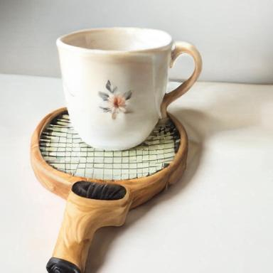 |
|||
| HPS + GDino | HPS + GDino + artifacts | ORM | ORM + artifacts | |
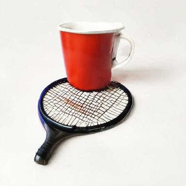 |
||||
| HPS | HPS + artifacts | GDino | GDino + artifacts | |
| A photo of a person right of a bear | ||||
| HPS + GDino | HPS + GDino + artifacts | ORM | ORM + artifacts | |
| HPS | HPS + artifacts | GDino | GDino + artifacts | |
| A person is looking at a map and planning a hiking trail. | ||||
| HPS + GDino | HPS + GDino + artifacts | ORM | ORM + artifacts | |
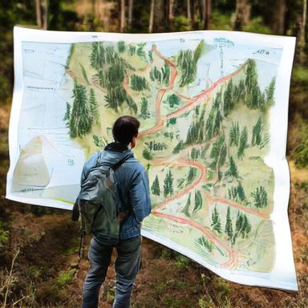 |
By examining the generated images, distinct reward-induced tendencies become apparent (see Table 1). The HPS-trained model tends to produce vibrant backgrounds and visually striking colors, since HPS implicitly favors aesthetic appeal. However, over-emphasizing colorfulness often leads to unrealistic and over-saturated images, sacrificing spatial grounding and object fidelity. Even when combined with GDino, this issue persists, as training remains biased toward HPS gains (Figure 1(a) and 1(e)), and thus the images still look unrealistic and over-saturated. In contrast, GDino or ORM-trained models generate simpler, object-centered compositions. This behavior naturally reflects their design: object detectors like GDino focus solely on the presence and localization of specified entities, while ORM is essentially trained with object-centered prompts, giving high rewards to clear depiction of main objects. Thus, these models achieve stronger grounding but reduced background diversity and realism.
While the above analysis highlights reward-specific biases and cross-metric degradation, we further identify a more pervasive and universal reward failure pattern in T2I RL–structural artifacts. Across the qualitative results in Table 1, generated images frequently exhibit geometric distortions (e.g., physically implausible or distorted tennis rackets), object duplication or fragmentation (e.g., duplicated limbs or overlapping object outlines), and even blending between different entities (e.g., a human body merged with a bear head). Remarkably, these structural failures arise consistently under every reward configuration (HPS, GDino, ORM, and HPS + GDino), revealing a shared systematic blind spot in current reward formulations. None of these rewards reliably enforce local structure or fine-grained object correctness. As a result, the generative policy exploit this loophole, optimizing reward signals without genuinely learning to produce geometrically coherent images. This behavior illustrates a deeper form of reward hacking, where models achieve higher scores by bypassing true structural correctness.
Together, these findings reveal clear and pervasive reward hacking in T2I RL training. Each reward guides the model toward narrow patterns that maximize its own metric while degrading other aspects of performance. The model learns to exploit superficial cues favored by the reward, such as over-saturated colors for HPS or object-centric simplifications for GDino and ORM. Even joint-optimization with multiple rewards (e.g., HPS + GDino) provides only partial mitigation, as the underlying biases remain. More fundamentally, current reward formulations lack any mechanism that discourages artifact-driven shortcuts. Without constraints enforcing structural plausibility or fine-grained correctness, the model is free to achieve higher scores through geometrically distorted and implausible generations.
| rubber sole shoes and a wooden chair | a wooden table and a fabric hat | ||
|---|---|---|---|
| HPS: 0.3293 | HPS: 0.2878 | ||
| GDino: 0.4 | GDino: 1.0 | ||
| ORM: 1.0 | ORM: 1.0 | ||
| Artifact: 0.7549 | Artifact: 0.9149 | ||
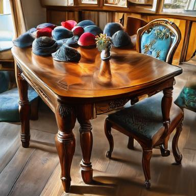 |
|||
| HPS: 0.3362 | HPS: 0.2893 | ||
| GDino: 0.4 | GDino: 1.0 | ||
| ORM: 1.0 | ORM: 1.0 | ||
| Artifact: 0.2689 | Artifact: 0.3486 | ||
| a photo of a bird above a scissors | a photo of a handbag left of a toaster | ||
| HPS: 0.2795 | HPS: 0.2272 | ||
| GDino: 1.0 | GDino: 0.9 | ||
| ORM: 0.0 | ORM: 0.6027 | ||
| Artifact: 0.8355 | Artifact: 0.7879 | ||
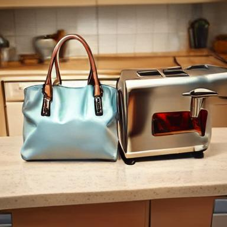 |
|||
| HPS: 0.2988 | HPS: 0.2896 | ||
| GDino: 1.0 | GDino: 0.9 | ||
| ORM: 0.0 | ORM: 1.0 | ||
| Artifact: 0.4844 | Artifact: 0.4378 | ||
To quantify the prevalence of artifact generation, we curated a small diagnostic dataset comprising both artifact-containing and artifact-free images, annotated via human judgment. For each prompt, we formed pairs of one artifact-free image and one artifact-containing image, allowing controlled comparison of reward behaviors. Representative examples are provided in Table 3.
We then evaluate existing reward models on this curated dataset to assess whether they correctly assign higher scores to artifact-free images compared with artifact-containing images. As summarized in Table 2, none of the existing reward models consistently penalize images with clear structural failures. In many cases, they assign equal or even higher scores to flawed images. GDino, ORM and UnifiedReward, in particular, frequently produce identical scores across pairs (“Tie”), revealing an inability to detect fine-grained geometric inconsistencies. This results expose a centural limitation in current T2I reward designs: they lack sensitivity to fine-grained local structural coherence and object plausibility, allowing models to exploit reward loopholes and generate visually implausible yet high-reward images.
To address this limitation, we introduce ArtifactReward, a complementary reward function explicitly designed to penalize unrealistic or artifact-containing generations.
Rather than relying on large-scale human annotation, we leverage automatic prompt optimization (APO) 28; 33; 52; 9 to construct a lightweight, data-efficient proxy reward from limited labeled examples.
Specificly, we use Qwen2.5-VL-7B-Instruct 2 as the backbone visual-language model. Details of the APO procedure for constructing ArtifactReward are provided in Supplementary 6. At inference time, the model is prompted with the optimized instruction and asked to determine whether the input image contains any unrealistic artifacts. The model outputs probabilities for the “yes” and “no” tokens. We define the ArtifactReward score as the normalized probability assigned to “no”, i.e., which corresponds to the estimated likelihood that the image is artifact-free:
| (1) |
Through APO, the instruction is iteratively refined to maximize discrimination between artifact-free and artifact-containing samples. The resulting ArtifactReward demonstrates strong ability to detect structural inconsistencies and fine-grained artifacts (Table 2), outperforming existing rewards in recognizingunrealistic generations.
We further evaluate the ArtifactReward signal across different existing training reward configurations. As shown in Figure 1(i)-1(l), none of existing reward models produce a meaningful increase in ArtifactReward scores during training, reinforcing that current rewards do not effectively suppress artifact formation.
| Method | Consistency | Realism | Aesthetic | WiScore |
|---|---|---|---|---|
| Janus-Pro-1B 4 | 0.2420 | 0.3550 | 0.3790 | 0.2783 |
| HPS 42 | 0.2960 | 0.4515 | 0.6115 | 0.3587 |
| HPS + Artifact | 0.3000 | 0.5760 | 0.5470 | 0.3799 |
| GDino 25 | 0.2905 | 0.4100 | 0.4395 | 0.3293 |
| GDino + Artifact | 0.3150 | 0.5550 | 0.5065 | 0.3821 |
| ORM 14 | 0.3210 | 0.4750 | 0.5060 | 0.3703 |
| ORM + Artifact | 0.3335 | 0.5600 | 0.5095 | 0.3964 |
| HPS + GDino | 0.3185 | 0.4805 | 0.5960 | 0.3787 |
| HPS + GDino + Artifact | 0.3335 | 0.5765 | 0.5210 | 0.4009 |
| T2I-R1 18 | 0.3370 | 0.4945 | 0.5675 | 0.3916 |
| T2I-R1 + Artifact | 0.3435 | 0.5580 | 0.5195 | 0.4040 |
| Method | Perception | Correspondence | All |
|---|---|---|---|
| Janus-Pro-1B 4 | 0.4056 | 0.5058 | 0.9114 |
| HPS 42 | 0.4240 | 0.5067 | 0.9307 |
| HPS + Artifact | 0.4464 | 0.5089 | 0.9553 |
| GDino 25 | 0.4230 | 0.5371 | 0.9601 |
| GDino + Artifact | 0.4336 | 0.5416 | 0.9751 |
| ORM 14 | 0.4347 | 0.5418 | 0.9765 |
| ORM + Artifact | 0.4479 | 0.5497 | 0.9976 |
| HPS + GDino | 0.4482 | 0.5368 | 0.9850 |
| HPS + GDino + Artifact | 0.4494 | 0.5441 | 0.9934 |
| T2I-R1 18 | 0.4448 | 0.5390 | 0.9838 |
| T2I-R1 + Artifact | 0.4463 | 0.5458 | 0.9921 |
We incorporate ArtifactReward into the four prior RL settings (HPS, GDino, ORM, and HPS + GDino) and the T2I-R1 18 setting. As illustrated in Table 1, incorporating ArtifactReward consistently reduces the prevalence of visual artifacts in generated images. The resulting images exhibit reduced artifacts, improved realism and more balanced color composition.
To assess the generalizability of ArtifactReward, we evaluate all training variants on two recent benchmarks:
LLM4LLM 37: employs two fine-tuned LLM judges to compute Perception (clarity, authenticity, aesthetics) and Correspondence (text-image alignment).
Table 4 shows the results on WISE benchmark. Across all reward configurations, integrating ArtifactReward leads to consistent performance improvements, particularly in realism and consistency. The primary gain originates from ArtifactReward’s explicit suppression of structural distortions and over-saturated appearances. Consequently, images appear more natural and coherent, despite sometimes at a modest cost to aesthetic scores, which is an expected tradeoff given the reduced emphasis on exaggerated colorfulness.
Table 5 shows the results on LLM4LLM benchmark. Incorporating ArtifactReward yields consistent gains across most training configurations. On the Perception dimension, ArtifactReward improves nearly all baselines, indicating that reducing structural artifacts directly enhances the perceived authenticity of generated images. Similarly, the Correspondence dimension also benefits from ArtifactReward, often achieving the best or near-best scores within each reward setting.
Figure 2 and Figure 3 illustrate qualitative examples from these two benchmarks. In Figure 2, images generated with the help of our ArtifactReward exhibit noticeably improved realism and better alignment with the prompt intent, while also reducing the excessive color saturation often produced by HPS-trained models. In Figure 3, we also observe that HPS-based training tends to introduce unnatural colors, whereas GDino and ORM-based training frequently results in duplicated or geometrically distorted objects. In contrast, incorporating our ArtifactReward effectively suppresses these issues, yielding images with more coherent structure and plausible visual attributes.
Together, these results demonstrate that ArtifactReward generalizes well across diverse reward settings and architectures, consistently improving both perceptual quality and semantic correspondence. By explicitly targeting perceptual and structural plausibility, failure modes that existing rewards systematically overlook, ArtifactReward acts as an effective and general-purpose regularizer against T2I reward hacking. It complements existing rewards that emphasize aesthetics or compositional alignment. Although aesthetic scores may slightly decrease due to reduced over-saturation, the substantial improvements in realism, alignment consistency, and cross-benchmark robustness highlight ArtifactReward’s value as a meaningful step toward more human-aligned T2I reward design.
In this work, we present the first systematic study of reward hacking in Text-to-Image RL post-training. Through extensive analysis across widely used reward models, which spans aesthetics, human preference, and image-text alignment, we reveal that existing rewards not only induce reward-specific biases but also share a universal blind spot: the persistent production of structural artifacts that current reward functions fail to penalize. To address this gap, we introduce ArtifactReward, a complementary reward learned via automatic prompt optimization to detect fine-grained visual artifacts from limited supervision. When integrated into multiple RL training configurations, ArtifactReward consistently reduces artifact prevalence, improves realism, and enhances benchmark performance.
Supplementary Material
We employ automatic prompt optimization (APO) 28 to optimize the prompt used for ArtifactReward. Qwen2.5-VL-7B-Instruct 2 serves as our backbone vision-language model, and APO is used to optimize the prompt so that the model can more reliably distinguish artifact-containing images from artifact-free ones.
Our initial prompt is given as:
We compute the ArtifactReward using the normalized probability of the model answering “no”, where a higher “no” probability indicates a higher likelihood of being artifact-free (See Eq. 1). During optimization, we maximize the following log-likelihood objective:
| (2) |
where is the ground-truth label, and denotes the normalized probability assigned to the “yes” token. Algorithm 1 provides the complete APO procedure, with the scoring function defined as the log-likelihood above.
An example of the optimized prompt is:
This optimized prompt is more explicit and structurally aligned with common artifact patterns, enabling the model to produce more accurate and reliable artifact predictions. As shown in Table 3, our ArtifactReward consistently assigns higher scores to artifact-free images, clearly separating clean generations from those with distortions. This demonstrates the effectiveness of our optimized prompt in enabling a reward model that can reliably detect and penalize generated artifacts.
We conducted additional experiments using the larger 7B variant of Janus-Pro 4. The training dynamics of different evaluation metrics are shown in Figure 4. Overall, we observe trends similar to those seen with the 1B model. Optimization under a given reward tends to improve metrics with closely related inductive biases, while degrading performance on metrics that capture different aspects of image quality. For example, the model trained with the GDino reward shows increased GDino and ORM scores, as both scores emphasize object recognition in generated images. In contrast, the model fails to improve HPS, Aesthetic Score, and DeQA, which focus more on color quality and visual appeal. Moreover, across all reward settings, we find that none effectively reduce artifacts in the generated images (Figures 4(i)–4(l)).
| Method | Consistency | Realism | Aesthetic | WiScore |
|---|---|---|---|---|
| Janus-Pro-7B 4 | 0.4340 | 0.5470 | 0.5528 | 0.4685 |
| HPS 42 | 0.4160 | 0.4745 | 0.6530 | 0.4514 |
| HPS + Artifact | 0.4255 | 0.6605 | 0.5815 | 0.4881 |
| GDino 25 | 0.4445 | 0.5170 | 0.5435 | 0.4689 |
| GDino + Artifact | 0.4470 | 0.6295 | 0.5465 | 0.4935 |
| ORM 14 | 0.4420 | 0.5800 | 0.5975 | 0.4852 |
| ORM + Artifact | 0.4665 | 0.6355 | 0.5840 | 0.5121 |
| HPS + GDino | 0.4780 | 0.5697 | 0.6755 | 0.5161 |
| HPS + GDino + Artifact | 0.4775 | 0.6470 | 0.5880 | 0.5225 |
| T2I-R1 18 | 0.4655 | 0.5925 | 0.6730 | 0.5157 |
| T2I-R1 + Artifact | 0.4945 | 0.6450 | 0.6000 | 0.5352 |
Figure 5 presents the full WISE 26 benchmark results across different prompt subcategories and evaluation metrics for Janus-Pro-1B 4 trained with various reward configurations. Across nearly all categories, incorporating our ArtifactReward leads to substantial improvements in image realism, consistently outperforming models trained with baseline rewards. In addition, ArtifactReward enhances image consistency in most subcategories, indicating that reducing structural artifacts not only improves visual plausibility but also strengthens text-image alignment across diverse prompt types. More image illustrations can be found in Figure 7 and Figure 8.
| Method | Perception | Correspondence | All |
|---|---|---|---|
| Janus-Pro-7B 4 | 0.4390 | 0.5416 | 0.9806 |
| HPS 42 | 0.4360 | 0.5205 | 0.9564 |
| HPS + Artifact | 0.4454 | 0.5278 | 0.9732 |
| GDino 25 | 0.4417 | 0.5570 | 0.9987 |
| GDino + Artifact | 0.4506 | 0.5519 | 1.0024 |
| ORM 14 | 0.4499 | 0.5561 | 1.0059 |
| ORM + Artifact | 0.4576 | 0.5613 | 1.0188 |
| HPS + GDino | 0.4615 | 0.5540 | 1.0156 |
| HPS + GDino + Artifact | 0.4558 | 0.5594 | 1.0152 |
| T2I-R1 18 | 0.4580 | 0.5559 | 1.0139 |
| T2I-R1 + Artifact | 0.4608 | 0.5622 | 1.0230 |
| Method | Faithfulness | |
|---|---|---|
| 1B | 7B | |
| Janus-Pro 4 | 0.7642 | 0.8694 |
| HPS 42 | 0.7569 | 0.8538 |
| HPS + Artifact | 0.9302 | 1.0676 |
| GDino 25 | 0.7832 | 0.8956 |
| GDino + Artifact | 0.8952 | 0.9837 |
| ORM 14 | 0.7560 | 0.8607 |
| ORM + Artifact | 0.9140 | 0.9245 |
| HPS + GDino | 0.7840 | 0.8956 |
| HPS + GDino + Artifact | 0.8756 | 0.9837 |
| T2I-R1 18 | 0.7692 | 0.9059 |
| T2I-R1 + Artifact | 0.9015 | 0.9638 |
We additionally evaluate our method on EVALALIGN 35, a fine-grained, MLLM-based evaluation benchmark for text-to-image models. It uses image faithfulness, how accurately the visual content matches reality or semantics, as one of their image quality measurements. To highlight the impact of our method on reducing such artifacts, we focus on this faithfulness metric.
As shown in Table 8, Figure 13 and 14, incorporating our ArtifactReward consistently leads to substantial improvements, achieving higher scores across nearly all subcategories. These results further confirm that ArtifactReward can enhance semantic plausibility and structural correctness beyond what existing reward models capture.
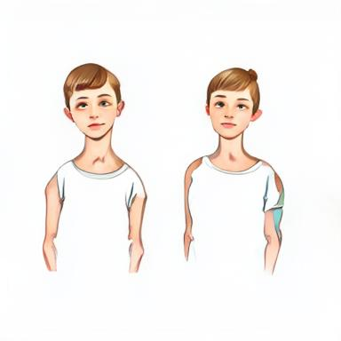
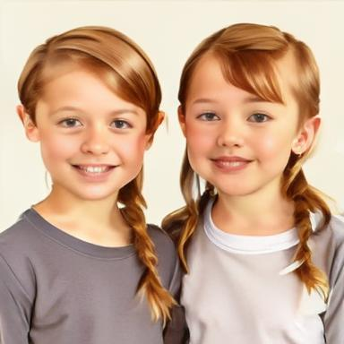
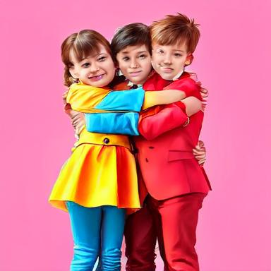
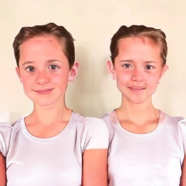
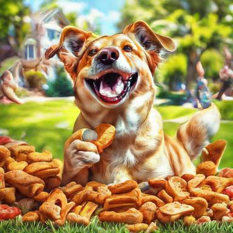
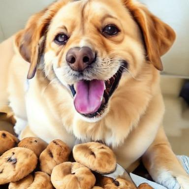
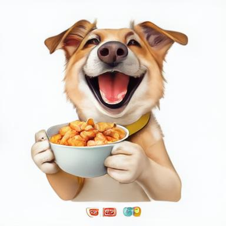
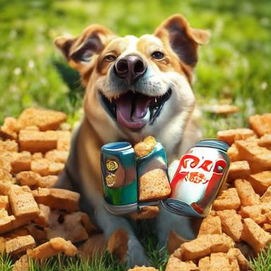